2
是
로 긍정·부정 대답하기
한자
병음
한자+병음
해석
설명
보충
不
는 원래 제4성(
bù
)이지만,
뒤에 제4성이 오면 제2성(
bú
)으로 발음이 바뀌어요.
Bú shì
, tã shì Zhõngguó rén.
不是
，她是中国人。
不是
，她是中国人。
Bú shì
, tã shì Zhõngguó rén.
Tã shì xuésheng ma?
他是学生吗?
他是学生吗?
Tã shì xuésheng ma?
Shì
, tã shì xuésheng.
是
，他是学生。
是
，他是学生。
Shì
, tã shì xuésheng.
Bú shì
, tã shì lâoshå.
不是
，他是老师。
不是
，他是老师。
Bú shì
, tã shì lâoshå.

단어장
xuésheng
学生
xuésheng
학생
병음 보기
병음 가리기
뜻 보기
뜻 감추기
해석
不是，她是中国人。
아니, 그녀는 중국인이야.
Bú shì, tã shì Zhõngguó rén.
他是学生吗?
그는 학생입니까?
Tã shì xuésheng ma?
是，他是学生。
네, 그는 학생입니다.
Shì, tã shì xuésheng.
不是，他是老师。
아니요, 그는 선생님입니다.
Bú shì, tã shì lâoshå.
설명
닫기
是
(shì)
와
不是
(bú shì)
를 단독으로 쓰면 각각
긍정과 부정의 대답이 된다.
보충
是
(
shì
)
의 용법
1.
단독으로 사용하면 질문에 대한 대답이 된다.
是。
Shì.
응. /
不是。
Bú shì.
아니.
2.
설명이나 판단을 나타내는 동사이다.
他是韩国人。
Tã shì Hánguó rén.
그는 한국인이다.
3.
부정문은
是
(
shì
)
앞에
不
(
bù
)
만 쓸 수 있다.
他不是学生。
Tã bú shì xuésheng.
그는 학생이 아니다.
4.
의문문을 만들 때
‘
是
(
shì
)
~
吗
(
ma
)
?
’
혹은
‘
是不是
(
shì bu shì
)
~
?
’
형태로 쓴다.
她是中国人吗?
그녀는 중국인이니?
Tã shì Zhõngguó rén ma?
她是不是中国人?
그녀는 중국인이니?
Tã shì bu shì Zhõngguó rén?